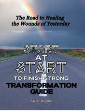

Take What You’ve Learned Into Your Own Life
Reading Start at Start to Finish Strong can help you recognize how past experiences, emotional wounds, and familiar patterns may be affecting your life today. Understanding those connections is an important beginning—but taking time to reflect and apply what you’ve learned helps make that understanding personal.

The Transformation Guide walks you through a journey of healing with God. It encourages you to connect the book’s lessons to your own experiences, invite God into the places that need His care, and prayerfully explore steps toward healthier responses and relationships.

The Breakthrough Journal helps you identify emotional triggers and trace them back to their “roots”—the experiences, hurts, and beliefs that may have shaped them. Rather than focusing only on your reactions and feelings today, it gives you space to explore where those reactions and feeling came from and bring that understanding to God.
The book introduces the journey.The Transformation Guide walks you through healing with God.The Breakthrough Journal helps you uncover the roots beneath your triggers.
You do not have to rush or have every answer. These companion books offer a way to continue thoughtfully, at your own pace—with honesty, compassion, and faith.